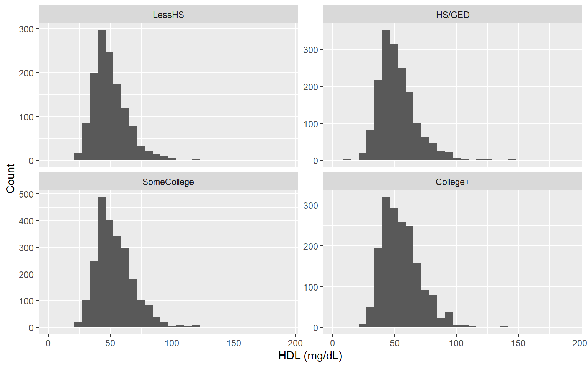

[1] "8,347"Project A – Task B: HDL & Food Security Dashboard
0) Setup (Packages and Data Wiring)
Task B — Subpopulation & Data Files Used
This dashboard uses three NHANES files (2017–Mar 2020 pre-pandemic):
Demographics (P_DEMO)
HDL Laboratory (P_HDL)
Food Security (P_FSQ)
We restrict to: RIDSTATR = “Both interviewed and MEC examined”, ages 21–79. Results shown here are unweighted for this assignment.
Task B — Adequate Ns
Sample size (21–79, MEC)
With HDL
[1] "7,155"Mean HDL (mg/dL)
[1] 53.1SD HDL (mg/dL)
[1] 15.8Task B — Visualizations 1: HDL distributions by education

Task B — Table 1: Mean and SD of HDL by education
| educ4 | n | mean_hdl | sd_hdl |
|---|---|---|---|
| LessHS | 1309 | 49.8 | 14.16 |
| HS/GED | 1695 | 52.2 | 15.92 |
| SomeCollege | 2358 | 53.6 | 15.72 |
| College+ | 1786 | 55.5 | 16.27 |
Task B — Table 2: HDL by Food Security
| fs_cat | n | mean_hdl | sd_hdl |
|---|---|---|---|
| Low | 1004 | 51.4 | 15.34 |
| Marginal/High | 5056 | 53.6 | 15.82 |
| Very low | 665 | 50.8 | 14.57 |
Methods
Files: P_DEMO (Demographics), P_HDL (HDL), P_FSQ (Food Security); merged by SEQN.
Subsample: RIDSTATR = “Both interviewed and MEC examined”; ages 21–79.
Key variables: RIDAGEYR (age), RIAGENDR (sex), DMDEDUC2→educ4 (education), INDFMPIR (PIR), LBXHDD/LBDHDDSI (HDL).